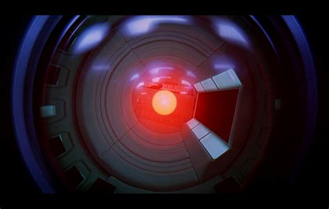
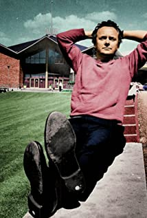
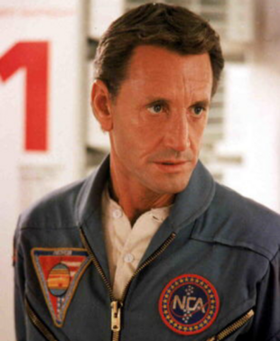

Main Characters
2001: A Space Odyssey
Character
Character Information
Actor
Other Works
Dr. Dave Bowman

Dr David Bowman is one of the two chosen astronauts aboard the Discovery One to remain awake during their voyage. He is intelligent and the main character of the movie.
- Fleet Admiral Hood in Halo
- Klaus Rhinehart in Hunters
- Fahrenheit 451
Dr. Frank Poole

Dr Frank Poole is the other astronaut that was chosen to remain awake during the voyage.

- Major Douglas in Terror in Paradise
- Kairo in Rose Marin
- Earl Warren in Dark Skies
HAL 9000

HAL 9000 is the onboard computer system for the Discovery One. It is responsible for running the ship. He is so advanced he becomes self aware, leading to conflicts between HAL and the astronaut that are awake.
Douglas Rain

- Fleet Admiral Hood in Halo
- Klaus Rhinehart in Hunters
- Fahrenheit 451
Dr. Heywood Floyd

Dr. Heywood Floyd is a government official who was sent to the moon to investigate a Monolith.

- Lt. General Preston Myers in Buck Rogers in the 25th Century
- Mr. Barclay in B.J and the Bear
- Leonard Driscoll in Gemini Man